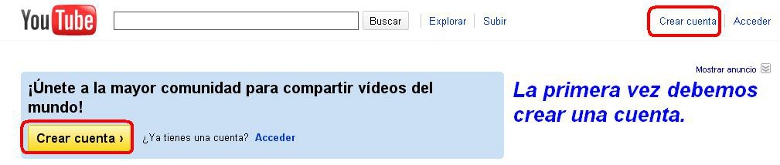
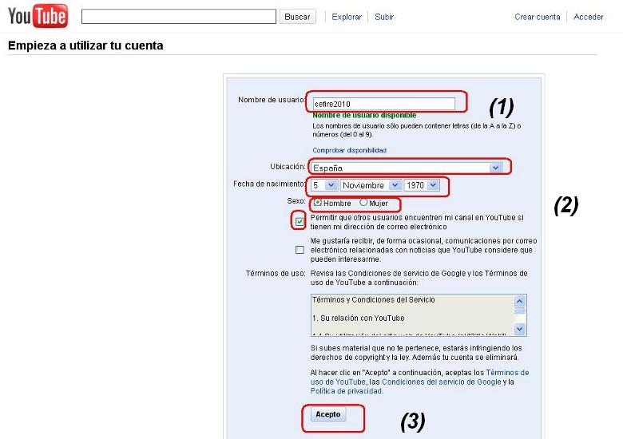
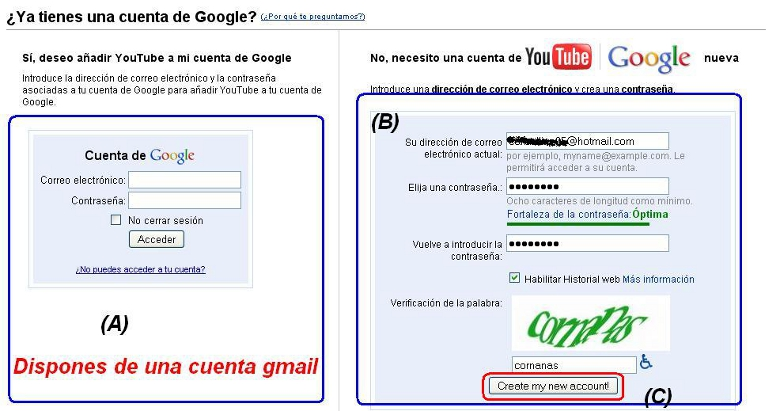
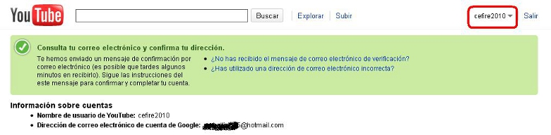

3. Compartir Videos (youtube)
En este apartado vamos a mostrar como puedo compartir mis videos en youtube. El proceso es similar para el resto de sitios (google videos, realplay, tu.tv, etc.).
Todos estos sitios nos piden, primeramente, crear una cuenta y, a posteriori, subir nuestros videos a la web.
Explicamos, igualmente, como acceder a los mismos.
| CREAR CUENTA EN YOUTUBE |
| Utilizando un navegador entra en www.youtube.es Nuestro primer paso, la primera vez, es crear nuestra cuenta en la comunidad Youtube. |
|  |
| Debemos entrar, tal como lo muestra la imagen anterior, en crear cuenta. El siguiente paso es indicar nuestro nick (1), los datos básicos (2) y aceptar (3). |
|  |
|
Tenemos que asociar nuestra cuenta de youtube con un e-mail. Disponemos de dos opciones: Primero (A), si tenemos una cuenta gmail, sólo debemos indicar el e-mail y nuestra contraseña y el sistema la asocia. Segundo (B), tenemos otro tipo de correo (ejemplo: hotmail). Indicamos la cuenta de correo, la contraseña y la palabra de verificación y (C) creamos nuestra cuenta. |
|  |
| El sistema nos envía un e-mail a nuestra cuenta confirmando el alta. En este momento, tal como lo muestra la imagen de la derecha Cefire2010 ya se encuentra en el sistema de youtube. |
|  |
Jo.R.C.A. 2004 - 2011

Edición de Audio y Video con Software Libre by José Ramón Cerdeira Alonso is licensed under a Creative Commons Reconocimiento-No comercial-Compartir bajo la misma licencia 3.0 España License